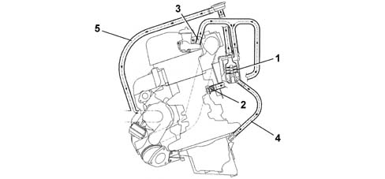

CONSTRUCTION SPECIFICATIONS
- Path
- Descriptions > 10 ENGINE > 1080 EMISSION CONTROL SYSTEM > 1080D CRANKCASE VAPOUR/GAS RECIRCULATION SYSTEM > CONSTRUCTION SPECIFICATIONS
- Kind
- system description
- Applies to
- engines: 2.4 JTD 20V; all production periods
- Interactive page
- https://sloeber94.github.io/elrnDB-lThss/en/#/841800
Applies to: engines: 2.4 JTD 20V; all production periods
The oil vapour emissions are controlled by means of an oil separator (1) which collects the vapours coming from the crankcase (2) and from the tappet cover (3). The condensed vapours return to the sump, via a pipe, whilst the uncondensed vapours are sent, via a pipe (5) to the turbocharger air inlet hose.

- 1 - Oil separator
- 2 - Oil vapour outlet from the crankcase
- 3 - Oil vapour outlet from the tappet cover
- 4 - Condensed vapour sump return
- 5 - Inlet vapour delivery pipe
- 6 - Regulation valve
There is a regulation valve (6), on the inlet vapour delivery pipe (5), with a spring that in normal conditions acts on a diaphragm keeping it open, thereby allowing the flow of oil vapours coming from the oil separator.
When the vacuum inside the pipe (5) overcomes the calibration of spring, the diaphragm moves thereby closing the duct from the oil vapour separator preventing the intake of oil from the sump.